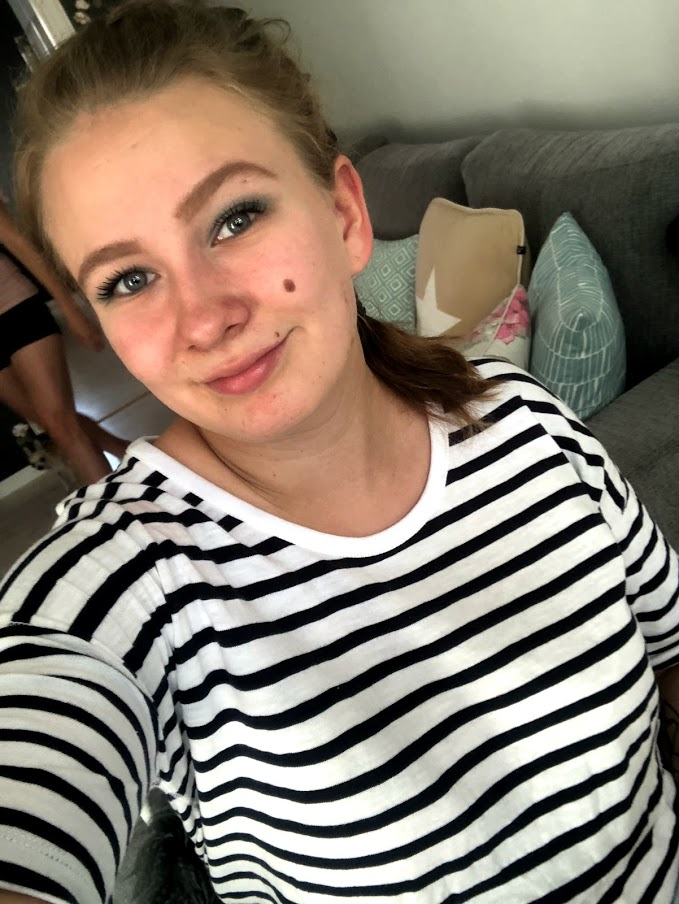
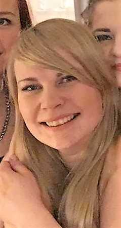
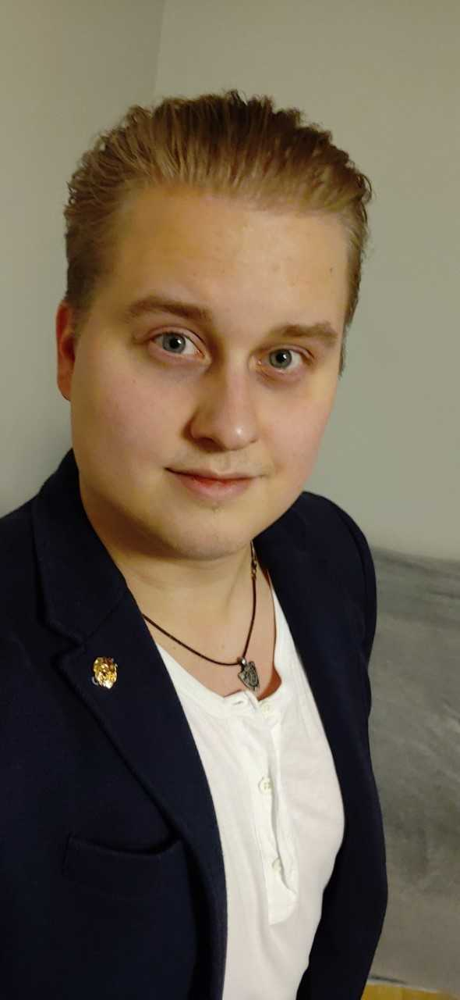

20, café chief
I’ve loved animals since I was little and always wanted to work with them but I never imagined it to happen this way. My heart is 100% with our job and I love to help cats to find their human. I work mostly with things that are related to our café so if you have questions about it, be in contact with me.
0442034219, jasmine.lundgren@edu.turkuamk.fi
25, cat equivalent
I’ve always loved cats and animals altogether and I feel priviledged to work with these wonderful animals and at the same time I’m able to something good. Every single cat is a personality of its own and it’s wonderful that I can be involved to make sure that the right people and cats find each other.
0400689937, sofia.verho@edu.turkuamk.fi
22, communication manager
My love for cats and the life I’ve lived around them is the reason for working in this company being my dream job.
0445733462, joona.teivastenaho@edu.turkuamk.fi